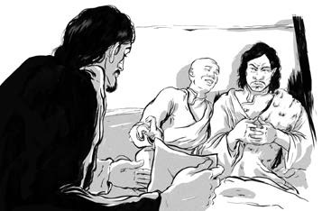
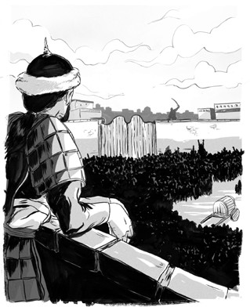
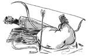
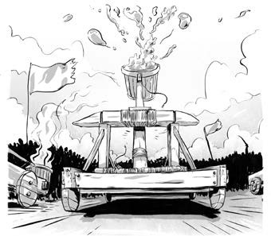
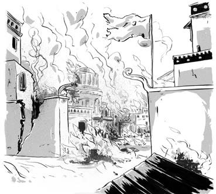

Năm 1210, vua nhà Kim, người đứng đầu tộc Nữ Chân qua đời. Vị vua mới lên ngôi, con trai ông, đã gửi một sứ thần đến gặp Thành Cát Tư Hãn.
Đối với người Nữ Chân, người Mông Cổ chỉ là phường rách rưới du mục. Sứ thần của Nữ Chân yêu cầu Thành Cát Tư Hãn quy phục vua Kim vĩ đại. Nếu Thành Cát Tư Hãn may mắn, có lẽ vua Kim sẽ ban cho ông chút của cải ít ỏi để đổi lấy lòng trung thành và sự phục tùng của quân đội.

.Nhưng Thành Cát Tư Hãn không quy phục bất kỳ ai.
Ngược lại, ông nguyền rủa vua Kim, nhổ nước bọt về phía sứ thần Trung Hoa rồi nhảy lên ngựa phi nước đại.
Đó là một lời tuyên chiến. Thành Cát Tư Hãn biết điều đó.
Mùa xuân năm 1211, ông triệu tập thần dân của mình. Người Mông Cổ chia thành từng nhóm đàn ông, phụ nữ, và trẻ em để cầu nguyện. Sau ba ngày tại đỉnh núi Burkhan Khaldun, Thành Cát Tư Hãn xuống núi và tuyên bố với người dân: “Trời Xanh Vĩnh Cửu đã hứa sẽ đem lại chiến thắng và phục thù cho chúng ta.”
Tháng Năm năm đó, 65 nghìn lính Mông Cổ hành quân tới Trung Hoa, vượt qua sa mạc Gobi rộng sáu trăm dặm chỉ trong một tháng. Khi tới nơi, họ bắt đầu đe dọa các vùng ngoại ô, đốt phá làng mạc và phá hoại mùa màng.
Nông dân bỏ chạy tới thành Nữ Chân cầu xin được bảo vệ làm tắc nghẽn các ngả đường.

.
CỖ MÁY CHIẾN ĐẤU MÔNG CỔ
Muốn phát động chiến tranh, cần một nỗ lực lớn. Nhưng người Mông Cổ đã suy tính đến mọi thứ.
Họ do thám trước khi hành quân để kiểm tra nguồn nước, địa hình trắc trở, đồng cỏ, và nơi có thể đóng quân. Khi đã chọn được địa điểm thích hợp, quân đội sẽ tới đó.

Một người lính chỉ mang theo những gì họ cần: đá lửa, kim khâu, lương khô, sữa, túi đựng nước, dây buộc ngựa và mũi tên. Nhờ đó, họ sẽ không cần sử dụng tới tàu chuyển hàng chậm chạp, dễ bị tấn công.
Nhưng binh lính Mông Cổ sẽ mất đi sức mạnh nếu không có ngựa bởi họ di chuyển hoàn toàn trên lưng ngựa. Số ngựa dư ra dùng để lấy sữa, lấy thịt hoặc thay thế những con ngựa đã kiệt sức. Nếu binh lính hết nước, họ sẽ uống máu ngựa.
Những người lính một mực tuân theo mọi mệnh lệnh của chỉ huy. Lòng trung thành và sự tự giác khiến họ trở thành một lực lượng không thể ngăn cản.
Đô thành tràn ngập người tị nạn. Miệng ăn thì nhiều mà mùa màng bị phá hoại. Nhiều người lâm vào cảnh chết đói.
Quân Mông Cổ dùng mọi cách tấn công thành của người Nữ Chân. Họ bắt thợ làm máy bắn đá hay vạc dầu sôi ở tường thành.

.Họ chặn các con sông khiến các đô thành lụt lội, lắp máy bắn cung bắn những mũi tên to để phá tường thành.
Các mánh khóe cũng được sử dụng. Trong chiến thuật “mồi nhử”, người Mông Cổ cố tình để lại đồ đạc và bỏ đi. Người Nữ Chân tưởng rằng người Mông Cổ đã rút quân nên mở cổng thành và tràn ra thu nhặt chiến lợi phẩm. Lính Mông Cổ ngay lập tức phi ngựa quay lại và xông thẳng vào thành.
Các thành đô lớn của nhà Kim như Thẩm Dương, Sơn Đông, Hà Bắc, Sơn Tây đã thất thủ. Người Nữ Chân đầu hàng. Vua Kim phải cam kết với Thành Cát Tư Hãn sẽ cống nạp châu báu hằng năm.
Nhưng ngay sau khi Thành Cát Tư Hãn rời kinh đô Nữ Chân là Yên Kinh, vua Kim đã bỏ trốn, xuôi theo phía nam dời đô về Khai Phong. Quân Mông Cổ quay lại Khai Phong và cướp bóc suốt một tháng ròng.
Họ thiêu rụi cả thành. Hàng nghìn người chết. Lần này sau khi rời đi, Thành Cát Tư Hãn cắt cử một đội quân ở lại để canh gác.

.Giờ đất đai của người Nữ Chân và một số thành trở thành một phần của Đế quốc Mông Cổ. Sau cùng, cả kinh đô Khai Phong mới cũng bị chiếm.